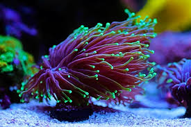

LPS Coral Care
LPS, or Large Polyp Stony corals, are popular among reef hobbyists because of their vibrant colors, flowing tentacles, and moderate care requirements. They offer a good balance of beauty and resilience, making them a strong choice for intermediate reef keepers.

Location
LPS corals are found in tropical reef environments, especially throughout the Indo-Pacific. Common collection regions include Fiji, Tonga, Indonesia, and the Great Barrier Reef. Many species live in middle or lower reef zones where lighting and water movement are moderate.
Lighting
Most LPS corals prefer moderate lighting. Very intense lighting can cause bleaching or tissue damage, while lighting that is too weak may reduce growth and coloration. Many LPS corals do well in the middle or lower areas of an aquarium.
- Low Light: 30–70 PAR
- Medium Light: 70–150 PAR
- High Light: Not recommended for most LPS species
Water Flow
LPS corals usually thrive in low to moderate water flow. Strong direct flow can damage their fleshy polyps, while weak flow can allow detritus to collect. Gentle, indirect movement that causes the tentacles to sway is usually ideal.
Feeding
LPS corals are photosynthetic, but many species benefit from supplemental feeding. Mysis shrimp, brine shrimp, and coral-specific foods may support growth and polyp extension. Food should be offered in appropriately sized portions.

Propagation
LPS corals can often be propagated by carefully cutting between polyp heads with a coral saw or other suitable tool. Species such as Micromussa and Euphyllia can recover well when they are handled carefully and returned to stable aquarium conditions.
A Word of Caution
Many LPS corals develop long sweeper tentacles that can sting nearby corals, especially at night. Hammer, torch, and frogspawn corals should be given enough space to prevent contact with neighboring colonies.
Acclimation
LPS corals should be introduced gradually to new lighting and water conditions. Sudden changes can lead to bleaching or tissue recession. Drip acclimation and gradual light adjustment can help reduce stress.